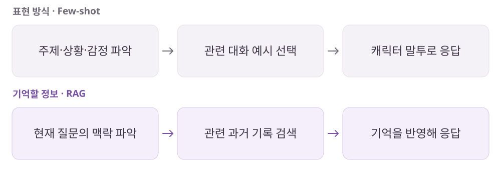
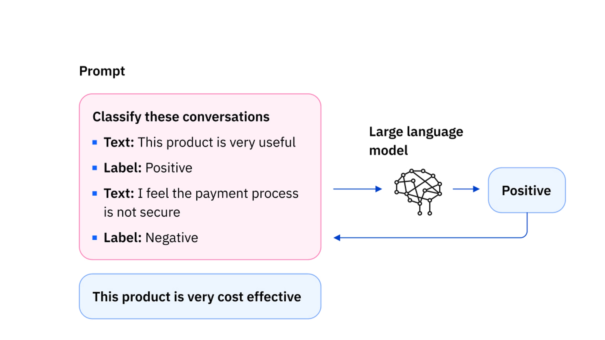

Zeta
AI 캐릭터의 말투 유지·대화 기억·발화 순서를 어떻게 설계할까?
AI 캐릭터와 대화하며 상황과 이야기를 함께 만들어가는 대화형 서비스.
학습 목적여러 캐릭터의 응답 순서를 조율하는 구조, 상황에 맞는 Few-shot 예시를 DB에서 골라 프롬프트에 넣는 과정, RAG로 이전 대화를 참고하는 방법을 학습했습니다.
개인 학습 기록 · 관찰한 경험, 기획 의도에 대한 해석, 개선 제안을 구분해 정리했습니다. 수치·요금·정책은 분석 당시 조사한 자료이며 현재 기준이나 직접 만든 성과가 아닙니다.
Zeta의 실제 내부 아키텍처를 확인한 문서가 아닙니다. 서비스 경험에서 출발한 구조 가설과 개인 학습 내용입니다.
01사용자와 해결 방향
누구를 위한 서비스인가원하는 성격·설정의 캐릭터와 직접 상호작용하고, 자신이 참여하는 이야기를 즐기고 싶은 사용자.
Why · 사용자가 찾는 이유
정해진 이야기를 읽거나 보기만 하는 대신, 내가 원하는 캐릭터와 직접 대화하고 내 말과 선택에 따라 이어지는 이야기에 몰입하고 싶다.
What · 제공 경험과 해결 방식
사용자의 메시지에 AI 캐릭터가 반응하는 대화를 제공한다. 사용자가 대화에 참여하며 캐릭터와의 관계와 이야기 전개를 만들어가는 경험을 제공한다.
사용자 니즈는 대화 경험을 바탕으로 정리한 해석이며, 별도 사용자 조사로 검증한 내용은 아닙니다.
02핵심 기능과 벤치마킹
- 오케스트레이션
- 여러 캐릭터의 응답 순서와 컨텍스트 전달을 조율하는 개념.
- Few-shot 예시 선택
- 주제·상황·감정에 맞는 대화 예시를 골라 응답 스타일 안내.
- 대화 기록 검색
- 이전 정보가 필요할 때 관련 기록을 찾아 응답에 반영하는 개념.
비교해서 살펴본 지점
- Few-shot / RAG
- 서비스 경쟁 비교가 아니라 말투 안내와 정보 검색의 역할 비교.
03동작 구조와 설계 의도
말투 예시와 대화 기억의 역할 분리

학습하며 정리한 구조
- 여러 캐릭터의 응답 순서와 맥락 전달을 오케스트레이션·에이전트 구조로 가정했습니다.
- 주제·상황·감정에 맞는 대화 예시를 선택하고 프롬프트에 조립하는 흐름을 설계 연습했습니다.

크게 보기 ↗여러 캐릭터가 응답하는 순서 · 설계 가설
사용자 요청을 오케스트레이터가 해석하고 첫 에이전트를 호출한다. 에이전트는 도구로 캐릭터 예시를 조회해 답한 뒤 결과를 반환한다. 다음 에이전트에는 직전 발화를 문맥으로 함께 전달하고, 최종 응답을 대화창에 순차 표시하는 구조로 연습했다.
왜 이렇게 설계했을까 · 나의 해석
- 말투 예시는 ‘어떻게 말할지’, 대화 기록 검색은 ‘어떤 정보를 참고할지’라는 서로 다른 목적을 가진다고 구분했습니다.
- 모든 예시를 한꺼번에 넣기보다 현재 상황에 맞는 정보를 선택하는 기준과 데이터 구조가 필요하다고 봤습니다.
04문제와 개선 제안
Pain Point · 걸리는 지점
- 예시를 모두 넣으면 비용과 문맥 부담이 커질 수 있다.
- 현재 상황과 맞지 않는 예시를 가져오면 캐릭터의 반응이 어색해질 수 있다.
설계 연습
- 사용자 입력 → 주제 분류 → 예시 조회 → 프롬프트 조립 → 응답 흐름으로 입출력 정의.
- Few-shot과 RAG를 역할 중심으로 구분하되 실제 구현 방식은 별도로 검증.
05장점과 아쉬운 지점
좋았던 점
- 표현 방식과 기억할 정보를 분리해 각 문제의 해결 수단을 구체화한다.
아쉬운 점 · 더 살필 점
- 공개된 내부 설계를 검증한 자료가 아니며, 실제 Zeta 구현으로 단정할 수 없다.
06내가 주목한 점
Zero·One·Few-shot과 예시 선택
예시 없이 질문하는 Zero-shot, 한 예시를 주는 One-shot, 여러 예시로 형식·말투를 안내하는 Few-shot을 구분했다. 많은 훈련 자료가 없을 때 활용할 수 있지만 품질을 보장하는 것은 아니다. 예시 500개를 모두 넣기보다 관련 2~3개를 골라 토큰 비용과 무관한 문맥을 줄이는 안을 검토했다.
예시 DB의 필드와 사례
점심 제안에는 무심한 수락, 식사 후기에는 친근한 칭찬, 심부름 요구에는 거절처럼 같은 식사 주제에서도 상황·감정에 따라 응답을 달리하는 예시를 구성했다.
| 필드 | 설계 이유 |
|---|---|
| 주제 | 식사·일상·공부·게임 등 현재 화제에 맞는 예시 선택 |
| 상황 | 첫 만남·갈등·위로·축하 등 같은 주제 안의 차이 반영 |
| 감정 | 기쁨·슬픔·분노에 맞춰 공감 톤 조정 |
| 입력·출력 | 사용자 발화와 캐릭터 반응을 한 쌍으로 보관 |
| 친밀도 | 관계 수준에 따라 같은 표현의 강도 조절 |
분류 → 조회 → 프롬프트 조립
Classifier가 입력에서 topic과 intimacy를 JSON으로 반환하면 서버가 해당 조건으로 input·output 두 쌍을 조회하는 예제를 작성했다. 캐릭터 역할 지시, 선택한 예시, 실제 사용자 입력을 순서대로 조립하는 구조이며 분류 기준이 모호하면 그 기준의 예시도 필요하다고 정리했다.
분류 결과: { "topic": "식사", "intimacy": 2 }
조회 조건: topic = 식사 AND intimacy = 2, 최대 2건
프롬프트: 캐릭터 역할 + 선택한 대화 예시 + 현재 입력Few-shot과 RAG의 역할 비교
| 비교 축 | Few-shot 예시 설계 | RAG 기억 검색 설계 |
|---|---|---|
| 목적 | 어떻게 말할지: 말투·성격 | 무엇을 참고할지: 과거 대화·일정 |
| 데이터 | 입력·출력의 대화 쌍 | 사실·기록 단위 정보 |
| 선택 기준 | 주제·상황·감정 태그와 조건 | 질문과 기록의 의미적 유사도 |
| 학습한 저장소 예 | MySQL·PostgreSQL 등 일반 DB | Pinecone·Milvus 등 벡터 DB |
| 명령 방식 | 서버의 명시적 조건 조회 | 검색 엔진의 유사도 계산 |
원문에서 연습한 한 가지 구성이다. Few-shot을 반드시 일반 DB로, RAG를 반드시 벡터 DB로만 구현해야 한다는 뜻은 아니다. Zeta의 실제 구조도 확인되지 않았다.
기획에 가져갈 기준
- 프롬프트를 길게 쓰기 전에 필요한 데이터와 선택 조건을 정의할 것.
- 발화 순서·예시 검색·기억 검색·응답 생성을 나눠 품질을 검토할 것.